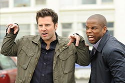
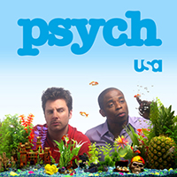

Psych is an American detective comedy-drama television series created by Steve Franks and broadcast on USA Network with syndicated reruns on ION Television.[1] The series stars James Roday as Shawn Spencer, a young crime consultant for the Santa Barbara Police Department whose "heightened observational skills"[2] and impressive eidetic memory allow him to convince people that he solves cases with psychic abilities. The program also stars Dulé Hill as Shawn's intelligent best friend and reluctant partner Burton "Gus" Guster, as well as Corbin Bernsen as Shawn's father, Henry, a former officer of the Santa Barbara Police Department.[3]
Psych debuted on Friday, July 7, 2006, immediately following the fifth-season premiere of Monk, and continued to be paired with the series until Monk's conclusion on December 4, 2009. During the second season, an animated segment titled "The Big Adventures of Little Shawn and Gus" was added to the series. Psych was the highest-rated U.S. basic cable television premiere of 2006.[4] USA Network renewed the series for an eighth season on December 19, 2012, to include eight episodes, and ordered two more episodes on June 25, 2013, bringing the episode order to ten. On February 5, 2014, USA Network confirmed that the eighth season of Psych would be its last, with the series finale airing on March 26, 2014.
The show has developed a cult following, especially in the years since going off air, with fans of the show being called "Psych-O's".[8][9] Psych: The Movie, a two-hour TV movie, aired on USA Network on December 7, 2017.[10] Franks' hope is to make five more Psych movies, following Psych: The Movie.
| James Roday | Shawn Spencer |
|---|---|
| Dule Hill | Burton Guster |
| Maggie Lawson | Juliet O'Harra |
| Timothy Odmundson | Carlton Lassitor |
Psych is one of those happy collisions of an intelligent script and an appealing cast.
{kind=link}
{kind=link}
Below is a list of every Psych episode aired or unaired to date.
{kind=link}